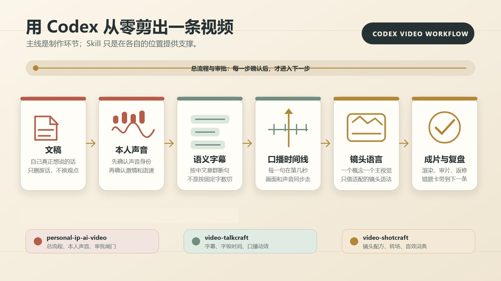
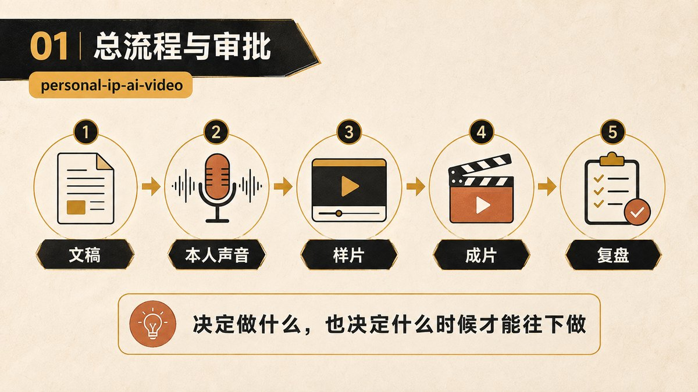
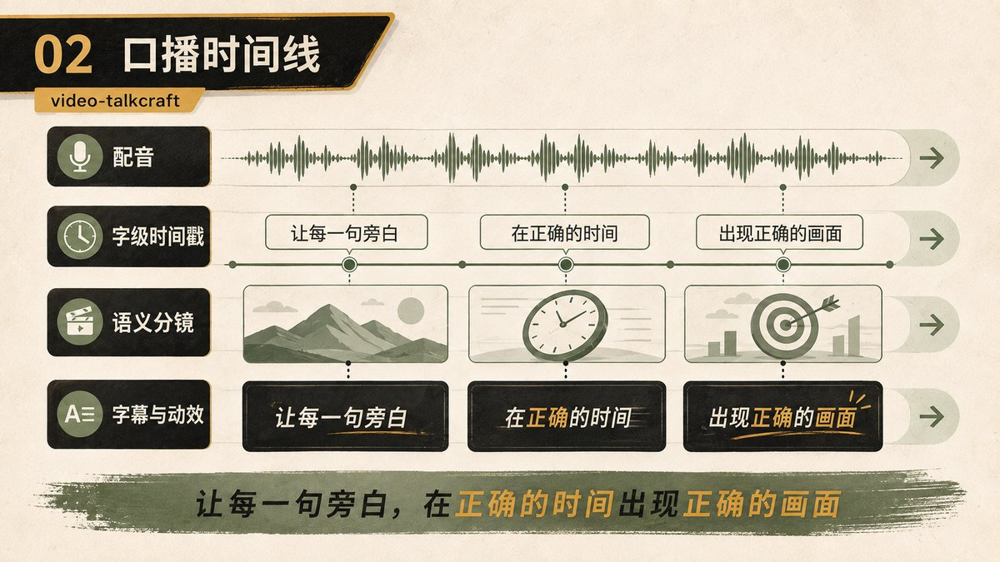
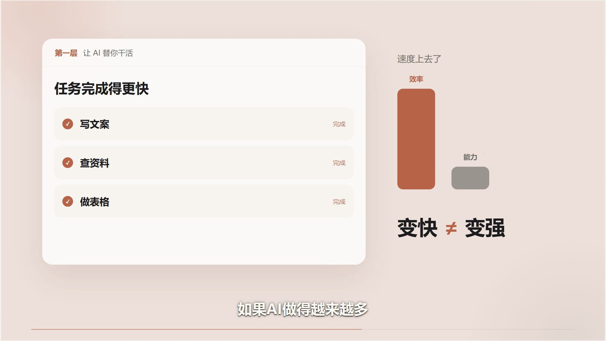
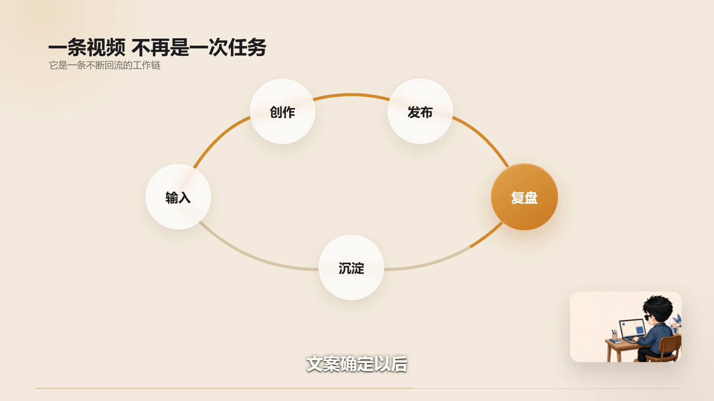
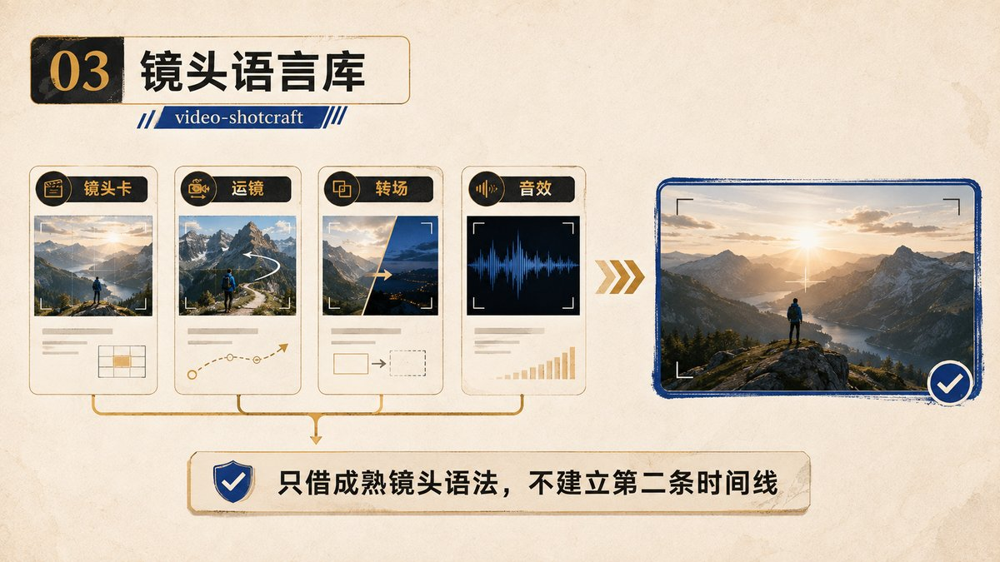

我用 Codex 从零到一剪出一条 AI 视频
我把一篇自己写好的口播稿、已有的 IP形象和本人授权音色交给 Codex，让它完成配音、字幕对齐、分镜、动效和渲染。最后，做出了一条 2 分 54 秒、1920×1080、30fps 的横版知识视频，全程没有真人出镜。
这次我想分享的，就是 Codex 怎样把这份文稿一步步剪成视频。如果你也有内容想做成视频，却卡在声音、字幕和画面怎么接起来，下面这次实操，可以帮你看清开工要准备什么、哪些工作能交出去，以及哪里还得自己把关。
自动剪辑具体做了什么，我又做了什么
先把“从零到一”说清楚：这次是从文稿走到成片，形象、授权音色和制作工具都有已有基础。
Codex 承接了从文字到视频的制作工作：调用工具生成配音，建立字幕和时间轴，按语义安排画面，再通过 Remotion 把人物、文字、信息图和动效渲染成完整视频。
我负责提供内容和素材，确认声音、风格，审片并指出问题。整个过程有多轮反馈，“自动”主要发生在具体制作环节。
成片的主题是我对使用 AI 的一次反思：为什么有些人用了很多工具，却没有真正积累能力。
我保留了自己最想说的一句开头：
我用了 AI 快四年，后来才发现一件扎心的事：AI 最先改变我的，不是能力，而是——我变懒了。
这句话决定了后面的表达。我希望做出来的片子，仍然像我在分享自己的经历。

📷从文稿、本人声音、字幕和时间线，到镜头、成片与复盘的制作流程
开工前，我先给它一份明确的制作要求
除了文稿、自己的IP形象和授权声音，我还给了几条具体要求：
- 做横版 1920×1080、30fps，目标平台是 B 站和抖音。
- 不真人出镜，使用已经确认的IP形象。
- 文稿只做轻压缩，保留个人经历、三个层级和三个自检问题。
- 声音要有激情、有重点，但不能喊。
- 画面跟着语义和情绪变化，避免从头到尾只是人物加字幕。
这些要求会直接影响后面的制作。比如，文稿压缩多少会改变配音时长；画幅会影响字幕和卡片布局；人物出场频率会影响整条视频的节奏。
文稿这一关，我尤其在意口吻。原来有一句“后来，我把自己使用 AI 的方式，分成了三个层级”，听起来有一点像开始上课。
后来改成：
后来我才慢慢发现，很多人都在用 AI，但其实停在不同的层级。你也可以看看，自己现在在哪一层。
意思没变，但更接近我想和观众说话的方式。确认文稿以后，才继续做声音和时间轴。
对应文末 Prompt 2：审核时明确保留哪些观点、允许压缩什么，并先交文稿供我确认。
三个 Skill，帮我把制作分工说清楚
这次流程受到 xilo 的文章启发，先在这里感谢他的分享。在实际制作中，我把个人 IP、声音确认和审片要求也放了进去。
这里需要交代清楚来源：video-talkcraft 和 video-shotcraft 是 Vincentwei1021 在 GitHub 发布的开源项目；personal-ip-ai-video 是我结合本人形象、授权声音和审片需求整理的本地流程 Skill。这次分享的是我把这些能力用到一条具体视频里的过程，开源项目的实现和镜头库应归功于原作者。
三个 Skill 在这条视频里各有一份工作：
personal-ip-ai-video 管文稿、本人形象、声音确认和制作流程，确保做出来的东西符合我的表达和要求。本文介绍的是我的本地版本，未附公开下载地址；其中的声音、形象和确认条件，需要按各自项目重新准备。
📷personal-ip-ai-video：文稿、本人声音、样片、成片和复盘的确认流程

video-talkcraft，来源为 Vincentwei1021/video-talkcraft。它接收定稿和成品配音，负责字级时间对齐、语义字幕、分镜及口播动效制作；配音本身需要先准备好。
video-shotcraft，来源为 Vincentwei1021/video-shotcraft。它提供可选的镜头语言，我从中借用适合当前内容的动效、转场和音效素材。
对这次协作，我定下的关键边界是：整条视频共用一条总时间轴，由 video-talkcraft 负责。其他画面设计都跟着这条时间轴走。
这样，声音、字幕和镜头才有同一个对照依据。否则，一个环节改了时间，另一个环节还按旧版本制作，很容易各自完成、合起来却对不上。
对应文末 Prompt 1 和 Prompt 1.1：前者交代整条制作线的职责，后者把单项任务交给执行代理。它们是我按本项目整理的指令，后面的附录也会标明各段提示词对应什么环节。
第一处返工：配音流畅，但用错了声音
这次最不该发生的问题，是前期沿用了另一个项目的音色预设，还把生成结果当成了我的声音。
我听过以后指出了问题，才重新换成正确的授权音色，再调整表达的力度。
这件事让我把声音确认拆成了两步。
第一步只确认身份：用 5–10 秒短句，听清楚是不是我授权的那个声音。第二步才确认表达：在同一段文字里调整语速、重音和情绪，判断它有没有我想要的推进感。
“像我”和“有激情”必须分别检查。身份都没对上，继续调情绪，最后还是要重做。
这也是我下一次会前置的检查：先把一小段声音听对，再生成完整旁白。
对应文末 Prompt 3。这一段加入了本次踩坑后的修正：先核对声音身份，再调整表达，确认后才生成完整旁白。
配音确定以后，字幕和画面才有准确的落点
有了完整配音，Codex 才能知道每句话真正说在第几秒。
初版字幕用的是“最多 17 字、最长 3.15 秒”的机械切分规则。字能放进去，但中文意群被截断，读着很别扭。
后来改成按中文语义短句断开，再匹配字级时间。最终整理成 106 条字幕，覆盖 733 个字级时间词，单条最长 14 个字。
这组数字是本片的结果。真正该检查的是：断句读起来是否完整，字幕出现时能否跟上人声，观众有没有足够时间读完。
📷video-talkcraft：把配音、字级时间戳、语义分镜、字幕和动效对齐

时间轴还有一个更明显的错误。
片尾有三个自检问题，初版把三张卡平均分配到一个 22.68 秒的场景里。结果第一张卡出现时，旁白还没说到“第一”，提前了将近 9 秒。
返修时，我让三张卡分别跟着真实旁白出现，时间锁在 02:05.40、02:09.68、02:13.80。
📷成片截图：三个自检问题中的第一问——省下来的时间，你拿去干什么了
这个修改给了我一条很具体的经验：问题、步骤和结论卡，要绑定触发词的实际时间。画面什么时候变，得回到声音里找依据。
检查也很直接：播放对应段落，听到“第一、第二、第三”时，看卡片是否刚好接上，而不是只检查三张卡有没有全部出现。
对应文末 Prompt 4：把“第一、第二、第三”等触发词的绝对时间码单独列出来，作为后续画面变化的依据。
我怎么让每句话有对应的画面
接下来，Codex 把完整旁白整理成一份分镜表，也就是 SHOTBOOK，共拆出 14 个语义场景。
每一段先回答一个问题：观众听到这里，最需要看见什么？
讲三个层级时，用层级卡片承接递进关系；讲“输入、创作、发布、复盘、再沉淀”时，用循环结构呈现前后连接；讲“学得更快、做得更多、沉淀得更深”时，让关键词依次接力出现。
📷成片截图：三个层级中的第一层，用任务卡与示意柱形表达变快不等于变强

IP形象 只用了四种已确认的姿态。在需要一个“说话的人”承接观点时出现，其余段落交给大字、信息图、问题卡和留白。成片截图：输入、创作、发布、复盘和沉淀组成循环，Mini.Me 在角落承接表达

video-shotcraft 就在这里提供帮助：根据循环、接力等语义关系，挑适合的镜头动作，再改成这条片子的字体、颜色和布局。video-shotcraft：借用镜头、运镜、转场和音效语言，共用一条总时间线

我判断一个动效值不值得留，主要看它有没有让关系更容易理解。循环结构能让观众看懂工作怎样回到下一轮；三行字随便飞进来，未必能增加理解。
成片的视觉风格基本统一了，但我对动效的评价仍然是一般。中段变化偏少，真实录屏和案例截图也不足，有些地方还有动态演示文稿的感觉。
这是这次结果的实际上限。下一条，我更想补充真实工作过程，让画面里有具体证据。
对应文末 Prompt 5 和 Prompt 6：先明确每个分镜要让观众理解什么，再从镜头库选择合适的表达。
项目来源记录里，我具体参考了 video-shotcraft 的 ai-stream-response、line-carry-transition、cycle-glass-node-morph、word-relay-geometry 四种镜头语法，并按本片重新实现视觉样式和参数。片中使用的 11 个音效文件也来自这个项目的音效目录。
最浪费时间的，是整片出来才发现问题
这次经历了初版、人物慢推修正版、字幕修正版等多轮渲染。
回头看，一些问题完全可以提前发现：声音不对，听几秒就知道；字幕不好读，短样片就能看出来；卡片提前出现，检查对应中段即可。
但我当时没有把这些检查前置，等整条视频出来才集中返工。
所以下一次，我会先让 Codex 交三段样片：
- 3–5 秒视觉样片，确认人物、字幕、颜色和基础动效是否协调。
- 15 秒开头，确认第一句话和第一组画面能否接住观众。
- 20–30 秒复杂中段，专门检查多步骤卡片和音画同步。
样片通过，再做低码率整片审看。我的反馈统一带时间码，说明哪一段、什么问题，再集中返修。
对应文末 Prompt 7 和 Prompt 8。尤其是先交样片的要求，是这次返工后补强的流程，不能理解为本次从一开始就完整执行了这些检查。
我也尝试了 Sol 和 Luna 的代理分工：Sol 拆任务、检查结果，Luna 执行边界明确的子任务。
中间曾把 Luna 的简单任务也统一开到最高思考，带来了额外等待。下一次会按任务复杂度分配，并明确要求交回文件、时间码或渲染结果，方便验收。
这次没有完整的 Token 对照数据，所以我不把多代理写成已经验证的省钱方案。它对我最直接的作用，是把任务和责任拆清楚。
这条视频用了多久，下一条怎么开始
按项目文件时间记录，从 brief 建立到最终视频落地，约 2 小时 41 分钟；加上字幕终审，约 2 小时 45 分钟。
如果把双平台封面和发布文案也算上，总跨度约 4 小时 41 分钟。这些都是经过时间，包含过程中的等待，不能当作纯人工工时，也不能当作模型连续运行时间。
所以我更准确的说法是：这次大约用三个小时走完了核心视频制作和检查。中间做过返工，最后拿到了完整成片。
至于它能不能带来更好的播放、完播或关注，目前还没有发布数据支撑。做出视频这件事已经完成，传播效果还要另看。
下一条复用同一套形象、音色和视觉规则，我希望能在 60–90 分钟内拿到可审的第一版。这是下一次的目标，还不是已经跑出来的成绩。
我已经把这次的问题写进项目复盘。每个问题保留根因、修正办法和下次的检查条件，开工时先读一遍。
如果你也想试，先挑一篇自己真正想表达的短稿，标出不能改的观点，准备好可用的声音和视觉素材，让 Codex 先做出 15 秒。
听一遍声音，读一遍字幕，检查一个关键画面是否跟上了旁白。这 15 秒能成立，再把它扩成整条视频。
对我来说，这次最有价值的结果，是一篇自己写下的文字，确实在 Codex 的执行和我的逐轮确认中，变成了一条完整视频。下一次要复用的，也包括这次留下的检查方法。
提示词附录：按环节复用，先替换自己的材料
下面恢复的是我在原稿中整理、脱敏后的提示词，包含制作中的指令，也包含踩坑后补强的检查规则；它们不是逐字聊天记录。前文讲实际发生的过程，这里给的是方便下一次使用的整理版。
这些提示词由我按本项目的需求汇总，不是 xilo、video-talkcraft 或 video-shotcraft 作者发布的官方示例。它们需要配合相关 Skill 和工具使用；写上技能名称不会自动获得技能，也不会附带我的本人音色和 Mini.Me 素材。
使用前，替换文稿、文件路径、画幅、授权声音和形象等占位内容。Sol/Luna 是我这次使用的代理分工；如果你的环境不同，按实际可用的模型和协作方式调整。
Prompt 1：先锁定制作主线和 Sol/Luna 的职责
Prompt 1：先锁定制作主线和 Sol/Luna 的职责
对应本地 personal-ip-ai-video 的流程要求，以及本项目对两个开源 Skill 的职责编排；包含复盘后的分工修正。
你是 Sol 父代理，使用高思考模式，负责总规划、监督、验收和最终交付；
Luna 是子代理，负责执行 Sol 拆出的明确任务。
请先读取并遵守三个 Skill：
1. personal-ip-ai-video 负责总流程、文稿审核、黄金钩子、本人 Mini.Me、本人音色审批和样片闸门；
2. video-talkcraft 负责唯一总时间轴、字级对齐、语义字幕、SHOTBOOK、口播动效、渲染和质检；
3. video-shotcraft 只作为镜头语言和音效素材库，不要套完整产品宣传片模板，也不要建立第二条时间线。
协作规则：
- Sol 先列出三个 Skill 分别处理哪些环节，再决定哪些任务可以交给 Luna；
- Sol 每次只向 Luna 派发一个边界明确、可以独立验收的任务；
- Luna 不得自行扩大范围，不得再委派其他代理；
- Luna 必须先交付文件、时间码、检查表或渲染结果，不能只说“已完成”；
- Sol 必须独立检查结果，不得直接相信 Luna 的口头结论；
- 发现问题时，Sol 只发送具体缺陷、影响区间和返工目标，最多两轮；
- 最终是否进入下一制作环节，由 Sol 审核后交给我确认。
基本要求：
- 横版 1920×1080，30fps；
- 用于 Bilibili 和抖音横版；
- 文稿只做轻压缩，不能压成一分钟；
- 使用我已经确认的 Mini.Me；
- 使用本人授权音色；
- 视觉按当前暖白、深墨和语义换色方案；
- 先做确认，再进入下一道制作闸门；
- 简单盘点、格式转换和固定时间码提取不要使用最高思考；
- 文稿结构、分镜策略和独立终审才允许使用高或最高思考。
上面是整理后的 Sol 总 Prompt。Sol 真正派给 Luna 时，还要重新压缩成一份任务合同，不能把整段项目背景原封不动塞过去。
Prompt 1.1：Sol 发给 Luna 的标准任务合同
对应本项目的 Sol/Luna 派工约定，是执行任务的整理模板。
你是 Luna 执行代理。只完成下面这一项任务，不做额外规划，不修改无关文件。
任务目标：
【只写一个可交付结果】
必须遵守的 Skill 规则：
【由 Sol 摘出本任务真正相关的 3–6 条，不要整份复制】
输入：
- 【具体文件、音频、时间轴或文稿】
允许范围：
- 可读取：【路径或材料】
- 可写入：【明确输出路径】
禁止事项：
- 不改最终文稿、本人音色、Mini.Me 和已确认视觉方案；
- 不建立第二条时间线；
- 不生成任务范围外的素材；
- 不声称未实测的结果已经通过。
执行要求：
1. 先检查输入是否齐全；
2. 按指定 Skill 完成任务；
3. 先把结果落盘，再返回摘要；
4. 若失败，写明失败位置、原因和已产出的可用结果，不要自行扩大任务。
验收标准：
- 【可观察条件 1】
- 【可观察条件 2】
- 【可观察条件 3】
返回格式：
- 输出文件：
- 核验结果：
- 未通过项：
- 建议 Sol 复核的位置：
最重要的一点：思考等级也要写进每张派工单。复杂镜头和结构判断可以给 Luna 最高思考，机械执行只给中等思考。最高思考不是默认值。
Prompt 2：审核文稿和黄金开头
Prompt 2：审核文稿和黄金开头
对应本地 personal-ip-ai-video 的文稿审核环节。
请用 personal-ip-ai-video 审核这份口播稿。
目标不是重写成另一篇文章，而是：
- 保留我的个人经历和观点；
- 只压缩重复和口语赘词；
- 保留三个层级、三个自检问题和结尾 CTA；
- 给出 3 个黄金开头，优先推荐最像本人说话的一版；
- 标出事实风险、不能替我编造的经历和需要我本人确认的承诺；
- 当前只交文稿与责任确认单，不生成完整旁白和视频。
原稿：
【粘贴文稿】
Prompt 3：声音身份和能量确认
Prompt 3：声音身份和能量确认
对应本地声音确认流程，已补入误用音色后的修正规则。
使用我已授权的本人音色。必须按本次项目的声音身份卡读取，不得沿用任何其他项目的默认声音预设。
先不要生成完整旁白，分两步试听：
第一步：生成 5–10 秒声音身份样，只确认是不是我的声音；
第二步：身份确认后，用同一段文字生成 10–15 秒高能量样，要求有激情、有重点，但不要喊叫。
输出前自行检查：
- 是否误用了其他默认音色；
- 是否有错字、吞字、爆音或截断；
- 语速是否适合知识口播；
- 重点词是否真正被读出来。
没有得到我的明确确认，不得生成完整旁白，不得声称“这是本人声音”。
这一条是我踩坑后补上的。更准确地说，系统沿用了另一个视频项目的默认声音预设，却没有先确认它是不是我的本人声音。真正的问题不是某种声音风格，而是声音身份没有写清、没有锁定，也没有先做身份核验。
Prompt 4：把配音变成语义时间轴
Prompt 4：把配音变成语义时间轴
配合 Vincentwei1021/video-talkcraft 使用，加入本片字幕返修后明确的语义断句与时间锚点要求。
请用 video-talkcraft 处理最终文稿和已确认的完整配音。
输入：
- 最终文稿：【文件或内容】
- 完整配音：【音频路径】
要求：
- 在本机完成字级时间戳；
- 先按完整中文语义短句断句，不要按固定字数机械截断；
- 每条字幕从该意群第一个字开始，到最后一个字结束；
- 检查全文覆盖率、最长字幕字符数和低匹配片段；
- 为“第一、第二、第三、但是、所以、比如”等画面触发词输出绝对时间码；
- 字幕是整片时间线的主锚点，后续画面不得按场景比例猜时间。
先交时间轴和字幕检查结果，不制作整片。
Prompt 5：生成 SHOTBOOK
Prompt 5：生成 SHOTBOOK
配合 video-talkcraft 的 SHOTBOOK 分镜流程使用，明确本片的视觉任务和验收条件。
基于最终口播稿和字级时间轴，生成一份可以直接制作的 SHOTBOOK。
不要按标点机械切镜，要按完整语义段落切。
每个语义拍只回答五件事：
1. 这一段观众必须理解什么；
2. 主视觉是 IP形象、真实素材、信息图还是文字；
3. 画面里先发生什么、再发生什么；
4. 哪个词触发画面变化，绝对时间码是多少；
5. 这一镜怎么把主体交给下一镜。
每镜只保留一个主视觉任务，同屏主体组不超过三个，并留出一个空象限。
字幕不要重复画面大字；没有真实素材时明确标记，不得编造产品界面或数据。
Prompt 6：只从产品技能里借合适的镜头
Prompt 6：只从产品技能里借合适的镜头
配合 Vincentwei1021/video-shotcraft 使用，把开源镜头语法适配到本片的内容和视觉系统。
请用 video-shotcraft 为下面这个语义拍挑选镜头语法。
镜头信息：
- 配音内容：【粘贴对应口播】
- 观众需要理解：【一句话写清】
- 时长：【真实时间码】
- 语义关系：【对比 / 层级 / 因果 / 循环 / 接力 / 替换】
要求：
- 先查本地镜头卡和准确 demo；
- 只选择一个最匹配的主镜头语法；
- 说明要保留的元素关系、动作顺序和节奏命门；
- 字体、文案、颜色、尺寸和材质全部改成当前视频的视觉系统；
- 不套完整产品模板，不伪造产品界面，不建立新的总时间轴；
- 给出进入、停留、退出和对应音效时间。
先交选择理由和适配方案，再写进正式分镜。
Prompt 7：先样片，再整片
Prompt 7：先样片，再整片
来自本次复盘补强的样片检查流程，用于下一轮制作；不是本次从开工起就已执行的完整记录。
不要直接渲染整条视频。
先输出四种低成本检查材料：
1. 3–5 秒视觉锚点样片，只验证 Mini.Me、字幕、颜色和基础动效是否在同一套风格里；
2. 0–15 秒黄金开头样片；
3. 一个 20–30 秒的高风险中段样片，必须包含多步骤卡片或复杂信息动效；
4. 所有关键词触发点的静帧接触表。
检查本人音色、Mini.Me 一致性、字幕断句、关键词时间、动效密度和移动端可读性。
这四项检查材料通过后，再输出一次低码率整片审片版。收到我带时间码的集中反馈后，只修对应根因，最后渲染正式版。
Prompt 8：返修时不要只改表面
Prompt 8：返修时不要只改表面
对应本项目的局部返修与复核要求。
根据我的时间码反馈做局部返修：
【00:00 问题描述】
【00:00 问题描述】
每个问题都要记录：
- 修改前同一时间点；
- 根因；
- 修改后的同一时间点；
- 完整受影响区间；
- 最终成片再次抽取的同一时间点。
冻结我没有点名的文稿、音色、配色和镜头，不要借返修重新设计整片。
技能来源、GitHub 项目与示例
感谢原作者提供方法和开源项目。下面把来源与它们在本片中的角色分别列清楚，方便继续阅读和复用。
- 流程启发：xilo 的原始文章。这是我在原稿中记录的启发来源。
- 本地流程整理：personal-ip-ai-video，用于我的文稿、IP形象、授权声音和审片要求。
- 口播制作 Skill：Vincentwei1021/video-talkcraft。本片用它处理口播时间轴、字幕、分镜和动效制作；配套动效画廊可查看示例。
- 镜头与音效来源：Vincentwei1021/video-shotcraft。本片参考其中的镜头语法，并使用其本地音效素材；配套镜头画廊可查看示例。
- 本片实际渲染框架：remotion-dev/remotion。本片的可编辑工程和渲染任务使用 Remotion。
- 扩展参考：heygen-com/hyperframes-launches。原稿也列出了这个 HyperFrames 示例项目，这里保留为相关参考；本片实际使用的渲染框架是上面的 Remotion。